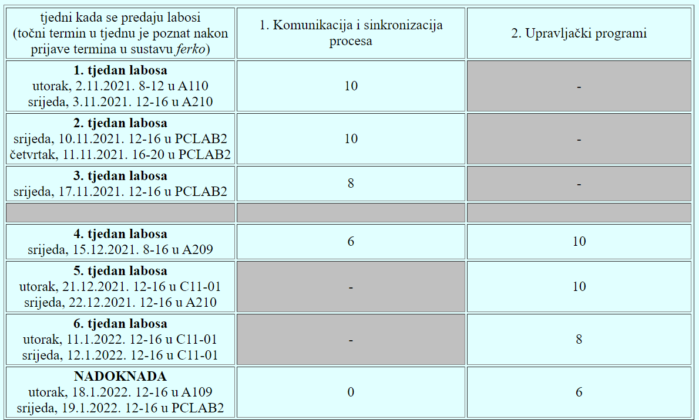

jel mozemo mi nekako izabrt grupu za labos al onaj sljedeci tjedan 10.11 i 11.11 ili ce to tek sljedeci tjedan bit dostupno za izbor
steker na Ferku je burza grupa
Dragi prijatelj strojnog učenja Znam ali nema ponudenih datuma za sljedeci tjedan
Peter Jordanson strpi se brt
Sta se zadnje radilo na predavanju
stura Sve iz 3. predavanja i labos pripreme u okviru 3. predavanja. Oboje je na materijalima
U blic ulazi samo ono sa zadnjeg sata?
Moze li me tko podsjetit kako idu labosi na ovom predmetu Ima samo dva? Ali zasto ima vise tjedana labosa? Je li treba predavati negdje na ferku kod ili samo pokazujemo asistentu kad dodemo tamo?
anon00 Labosa su samo dva, postoji vise tjedana termina za predaju ali se bodovi koje mozes dobiti taj tjedan za tu vjezbu smanjuju prema onoj tablici Vjezbe predajes na ferko pod domace zadace i onda dolazis u termin koji si odaberes na burzi grupa gdje pretpostavljam skines to sto si uploadao na ferko i onda demonstriras Ispravite me ako sam nesto krivo rekao
Malo sam usrao i tek sad krenio raditi labos gledajuci da mi je to sutra Ono sto nisam procitao je da je predaja 24h prije Ima li kakve nade? Moze li se odgoditi za slj tjedan ili nesto sl?
anon00 Zašto si zakazao termin prije nego što si dovršio program? U svakom slučaju krive ljude pitaš, šalji mail profesoru što prije.
anon00 u najgorem slucaju mozes nadoknadit jedan labos tako da se ne sekiraj
anon00 Prošle godine je vrijedilo da možeš otkazat termin, ali onda imaš -1b.
Daeyarn Dakle iako sam prijavljen u grupu ovaj tjedan, mogu jednostavno ne doci i prijaviti se u grupu sljedeci tjedan, a prema tablici koliko vidim isto mogu dobiti 10b kao da sam ovaj tjedan predao?
anon00 mislim da da, ali ako se dobro sjecam na operacijskim sustavima su se oduzimali bodovi ako nisi dosao u prijavljeni termin(al mislim da ne puno bodova, onak 1-2, ne znam kak je sada tho)
Jesu vam došli bodovi iz 2. blica?
Rene ne
Može li se negdje odjaviti termin laboratorijske vježbe?
BillIK Koliko sam skuzio ne trebas odjaviti termin vec samo prijavis termin u iducem tjednu, ali ces u tom slucaju max moci dobiti 8b prema ovoj tablici 
Neka me netko ispravi ako grijesim
BillIK Možeš ući u grupu Neraspoređeni, to je valjda kao da nisi ni prijavia termin